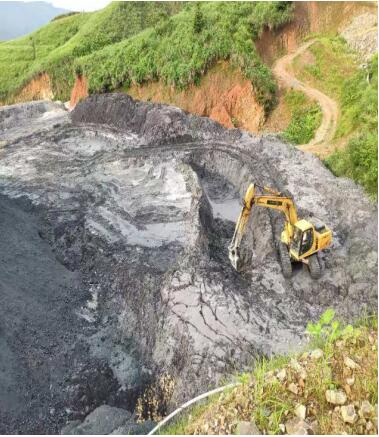
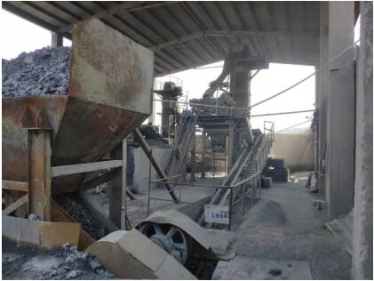
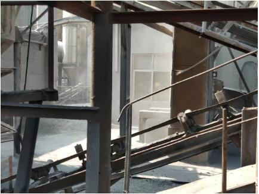
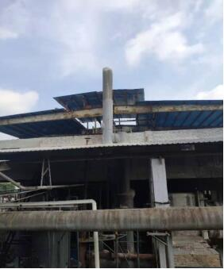

中国化工集团贵州天柱化工有限公司虚假整改问题依旧
导言
EHS管理中，管好HS需要高标准，管好E不仅仅需要高标准，还需要高境界。HS是人类生存条件，H相比S更进一步，而E则是人类幸福生活的保障、福祉，新时代五个发展理念之一“绿色”正是对EHS发展最好的诠释。在当下EHS管理过程中，发生HS事故绝大部分是生产条件不达标，就是没有做好高标准，而E有问题了则是人们的发展理念出现问题。近期国家生态环境部发布两则环境违法事例正好印证E需要当地政府和企业的高境界。
中国化工集团贵州天柱化工有限公司虚假整改问题依旧
2019年7月13日，中央第八生态环境保护督察组进驻中国化工集团有限公司（以下简称中国化工集团）开展督察工作。在前期对集团公司开展综合督察的基础上，经分析梳理并聚焦问题后，督察组下沉到贵州，对天柱化工有限公司进行重点督察。督察发现，该企业生态环境保护主体责任落实不力，环境违法问题和环境风险隐患严重，对待第一轮中央环境保护督察及“回头看”指出的问题，敷衍应对，虚假整改。一、基本情况
天柱化工有限公司位于贵州省黔东南州天柱县，2003年由中国化工集团所属河北辛集化工集团有限责任公司投资建设，先后建成2条碳酸钡生产线及配套渣库，每年产生危险废物钡渣约8万吨。企业一期渣场占地15亩，现已闭库；二期渣场占地面积约30亩，库容80万立方米，现已使用约50.5万立方米，库存渣量约70万吨。根据相关环评批复要求，二期渣场应当按照《危险废物填埋污染控制标准（GB18598-2001）》建设和运行，渣场建设应当采取“天然+人工”防渗措施，入场填埋的钡渣浸出液钡及其化合物浓度必须小于150毫克/升。
二、存在问题
（一）多次督察敷衍整改。2017年8月，第一轮中央环境保护督察指出，贵州省天柱化工有限责任公司二期渣场无水平防渗、管理粗放。贵州省督察整改方案要求企业规范建设、运行和管理渣场，确保钡渣（属危险废物）有序规范堆放，消除渣场环境污染隐患，2017年底前实现渣场规范化运行管理。但该企业没有按照要求完成渣场环境问题整改，2017年12月和2018年6月，两次因渣场渗滤液外溢污染外环境问题受到当地环保部门处罚，相关责任人被行政拘留。
2018年7月，生态环境部在组织抽查天柱化工有限公司督察整改情况时，发现该企业渣场防渗措施仍不完善，钡渣继续随意倾倒，环境污染和隐患突出，并于2018年9月就其整改不力问题进行了公开通报。但该企业依然故我，继续在整改工作中弄虚作假，为降低整改投入，故意隐瞒渣场未按标准建设防渗设施的事实，以欺骗手段获取专家论证意见，虚假整改问题突出。
2018年11月，中央生态环境保护督察“回头看”进驻贵州期间，该企业以专家论证意见应付督察组，声称二期渣场底部存在天然防渗层，能够满足渣场建设要求。但督察组经过深入检查后明确指出，该企业督察整改不力，渣场未按要求设置隔离及防渗措施，废渣与外环境直接接触，缺乏防雨设施，造成环境污染。
本次现场督察发现，企业渣场管理混乱，钡渣未经任何处置或检测，直接送入渣场填埋。现场采样监测，被填埋的钡渣浸出液钡及其化合物平均浓度高达2000毫克/升，超过入场填埋标准12倍。

图1 贵州天柱化工有限公司二期渣场
（二）屡次处罚违法依旧。2014年至2016年，天柱化工有限公司在上级公司河北辛集化工集团有限责任公司的安排下，违法建设无除尘设施的旋转烘干窑和属于政策淘汰类生产设施的一段式煤气发生炉。现场监测显示，两座旋转烘干窑窑头排放口颗粒物均超标，其中一期烘干窑窑头排放口颗粒物浓度高达6400毫克/立方米，超标212倍。
图2 原料破碎车间无任何集尘措施
督察组现场检查还发现，该企业原料破碎工序未建设收尘设施，制浆水解工段未建设污染物收集设施，无组织排放问题严重。
图3 车间无组织排放问题突出
2013年以来，该企业受到黔东南州、天柱县两级环保部门各类处罚多达17次，环境违法依旧，问题始终不改，污染情况十分突出。

图4 企业违法设置的排污口
（三）问题频发责任缺失。2017年8月，天柱化工有限公司危废渣场环境风险问题被中央环境保护督察指出后，河北辛集化工集团有限责任公司对上级中国化工新材料有限公司隐瞒不报。2018年9月，生态环境部通报天柱化工有限公司虚假整改问题后，中国化工新材料有限公司既没有要求下属企业加强整改，也未对下属企业整改情况开展检查和督办，仅要求上报材料了事。不仅如此，在2017年和2018年两个年度考核中，中央环境保护督察指出的突出问题均未纳入中国化工新材料有限公司对下属企业的考核评价范畴。三、原因分析
天柱化工有限公司思想认识不到位，在推进中央生态环境保护督察整改工作中弄虚作假，危废渣库环境风险隐患突出；企业环境保护主体责任不落实，环境违法违规问题突出。
河北辛集化工集团有限责任公司环境法律意识淡薄，直接参与下属企业的环境违法问题；中国化工新材料有限公司对所属企业存在的突出生态环境问题漠然视之，对虚假整改问题听之任之。
中国化工集团对下属企业存在的严重生态环境问题不了解、不知情，对中央环境保护督察公开曝光的下属企业生态环境问题不关心、不关注，集团内部生态环境保护责任传导机制严重缺失。
督察组将继续做好后续督察工作，并督促中国化工集团依法依规推进查处和整改。
本文信息来源国家生态环境部
相关主题：
原文编辑: EHS资讯
原文链接: https://ehsinfo.cn/2019/08/20/中化天柱化工虚假整改.html
版权声明: 转载请注明出处(必须保留作者署名及链接)